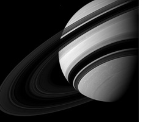

|
Сатурн в гороскопе
Символика Сатурна – форма, структура, время, ограничения, законы, логика.
Сатурн в знаках зодиака показывает способность четко выполнять свои обязательства, требовательность к себе и к людям, умение сказать «нет», внутренний стержень человека.
С Сатурном связано все то, что говорит “нельзя” и “надо”.
Сатурн - символ времени и тяжести судьбы, символ долга, обязательств, ответственности, символ упорства, настойчивости, выдержки, выносливости, терпения, целенаправленности. Он также является символом задержки, торможения, ограничений, тяжелого физического труда, самых различных жизненных испытаний, старости, одиночества, уединения, замкнутости.
Характеристика Сатурна в Водолее представлена ниже:
Сатурн в Водолее
У людей с Сатурном в Водолее хорошая способность к концентрации. Мышление непредвзятое и абстрактное. Главное для них - истина, высшее духовное развитие. Все общественные и научные вопросы рассматривают с точки зрения высших универсальных законов. Эти люди могут быстро собраться и сконцентрироваться в нужное время. Признание к ним часто приходит через сенсационные научные открытия или новые технические достижения. Обычно они скромны. У них хорошо развито чувство пространства. Обладают чувством справедливости и ответственности в отношении ближнего. К друзьям и сотрудникам относятся лояльно, с чувством ответственности. Эти люди, как правило, уравновешены и могут помочь словом и делом. Ценят общественные отношения. Способ мышления у людей с Сатурном в Водолее отличается демократичностью и научным подходом. Они амбициозны, трудолюбивы и беспристрастны. Из них получаются ответственные и преданные друзья. Они умеют работать в коллективах, группах и организациях, но только до тех пор, пока чувствуют свободу и независимость во всем, что делают. Общественные отношения имеют для этих людей большое значение, но другие могут неправильно понять их спокойствие и принять его за чрезмерное хладнокровие и расчетливость. Если появляются тяжелые аспекты, они могут быть эгоистичными и делать только то, что приносит им удовольствие. Если они будут чрезмерно гордится своей интеллектуальностью и не проявлять благодарность, могут стать полностью одинокими. Чтобы преодолеть эти тенденции, им потребуется время для глубокого размышления о себе и окружающем мире.
|


 Тайна имени
Тайна имени Сатурн в знаке Водолей
Сатурн в знаке Водолей